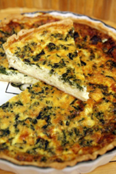

Recetas
Recetas
 Pescado
Pescado
 Atun
Atun
 Veganas
Veganas
 Vegetarianas
Vegetarianas
 Quinoa
Quinoa

Tarta de espinacas y queso feta
Una tarta deliciosa y nutritiva, con espinacas frescas y queso feta, perfecta para una comida principal o como aperitivo.
Dificultad
Dificil

Personas
6

TOTAL
45MIN
Ingredientes:
- 1 lámina de masa filo o masa quebrada
- 2 tazas de espinacas frescas
- 1/2 taza de queso feta, desmenuzado
- 1/2 cebolla, picada
- 2 huevos
- 1/2 taza de leche
- 1 cucharada de aceite de oliva
- Sal y pimienta al gusto
- Nuez moscada (opcional)
Información nutricional (aproximada por porción):
- Calorías: 320 kcal
- Proteínas: 12 g
- Grasas: 22 g
- Carbohidratos: 20 g
- Fibra: 3 g
A cocinar:
- Precalienta el horno a 180°C (350°F).
- En una sartén, calienta el aceite de oliva y sofríe la cebolla durante 3-4 minutos hasta que esté suave.
- Añade las espinacas y cocina hasta que se marchiten. Deja enfriar un poco.
- En un tazón grande, bate los huevos con la leche, sal, pimienta y una pizca de nuez moscada. Agrega las espinacas y la cebolla, y mezcla bien.
- Coloca la masa en un molde para tarta y vierte la mezcla de espinacas y huevos. Espolvorea el queso feta por encima.
- Hornea durante 30-35 minutos, o hasta que la tarta esté dorada y firme.
- Sirve tibia o a temperatura ambiente.